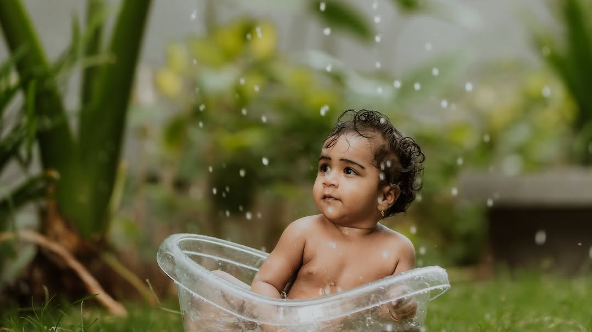
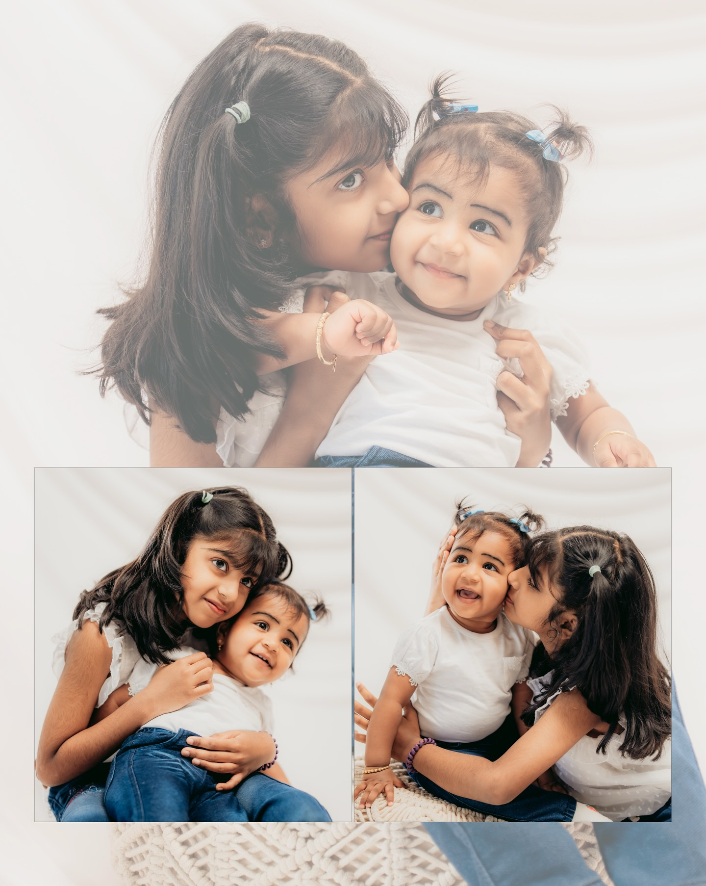
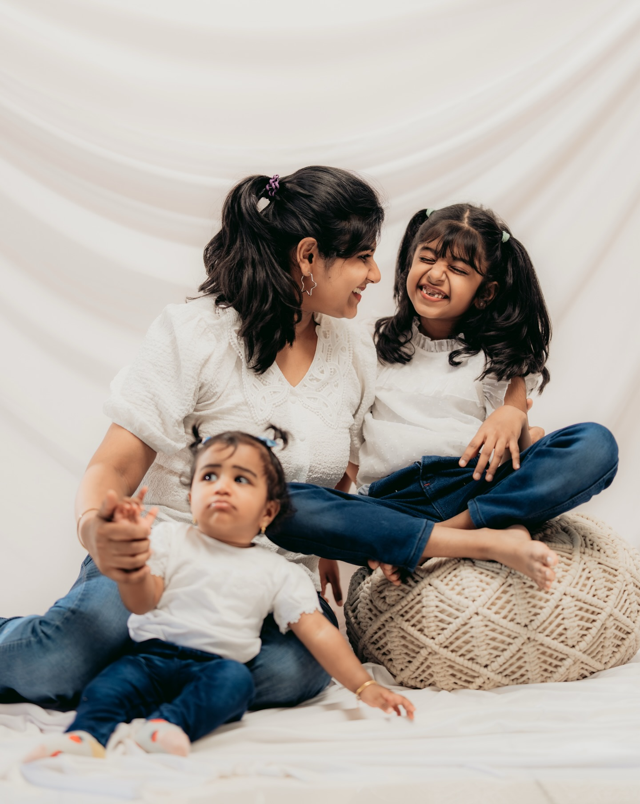
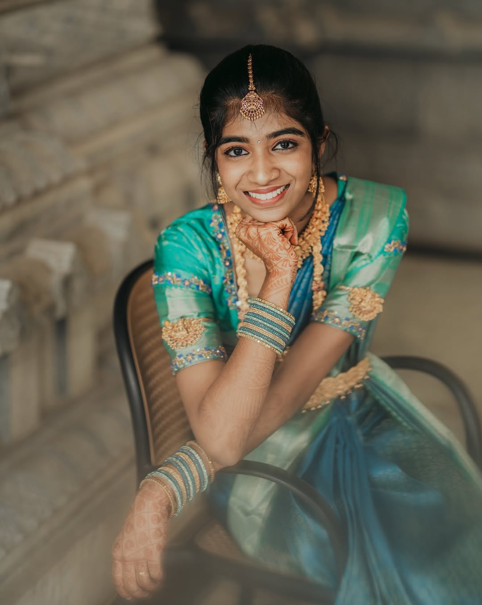

Little Memory Portraits · Toddlers & Kids
Never still. Never mind.
Natural childhood memories. Movement, mischief and the faces they make when they forget the camera.
Toddlers
We do not ask toddlers to sit still. We follow them. The photographs are better, and everyone has a much nicer afternoon.
Sessions happen outdoors or at home, wherever your child feels free. Expect running, snacks, at least one small meltdown and a set of photographs that look exactly like them.




Family interactions
You are in these too.
The best photographs of children have their parents in them. Not posed beside them, but chasing, carrying, tickling and consoling. We photograph the interaction, not the arrangement.
Come as you are. Wear something comfortable. We will take care of the rest.
Plan a family session
Kids
Portraits of who they are becoming.
Older children have opinions, jokes and a very good sense of when they are being photographed. So we make it a conversation rather than a shoot. Somewhere between the silly faces, the real ones appear.
- Ages 4 and up
- Outdoors or studio
- Siblings welcome


Family sessions
They will not be this small for long.
Tell us a little about your child and where they are happiest. We will suggest a time of day and a place to match.